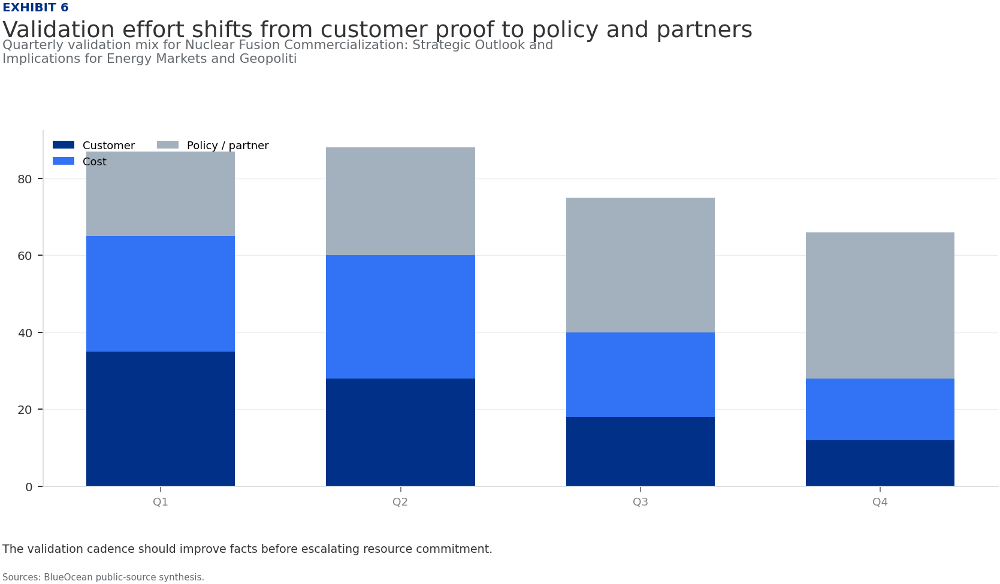
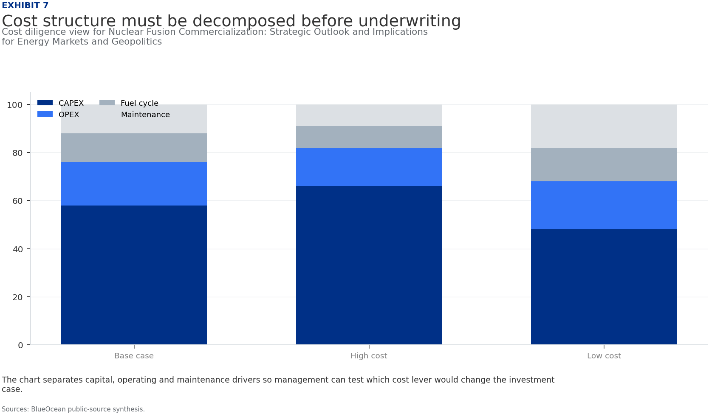
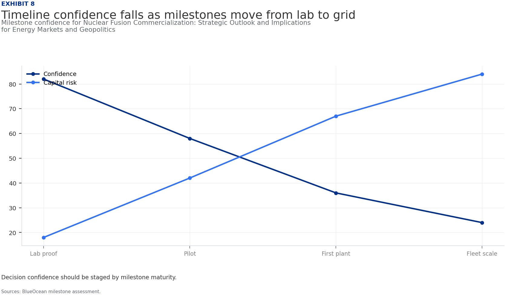
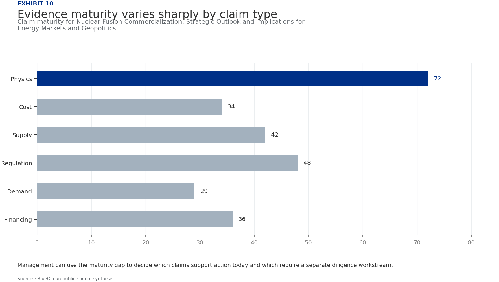
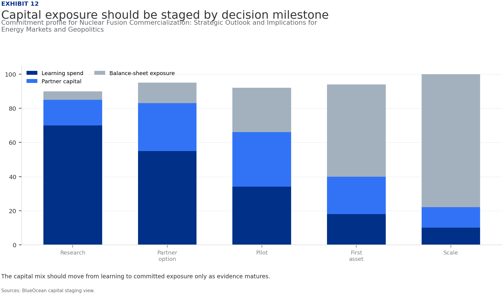
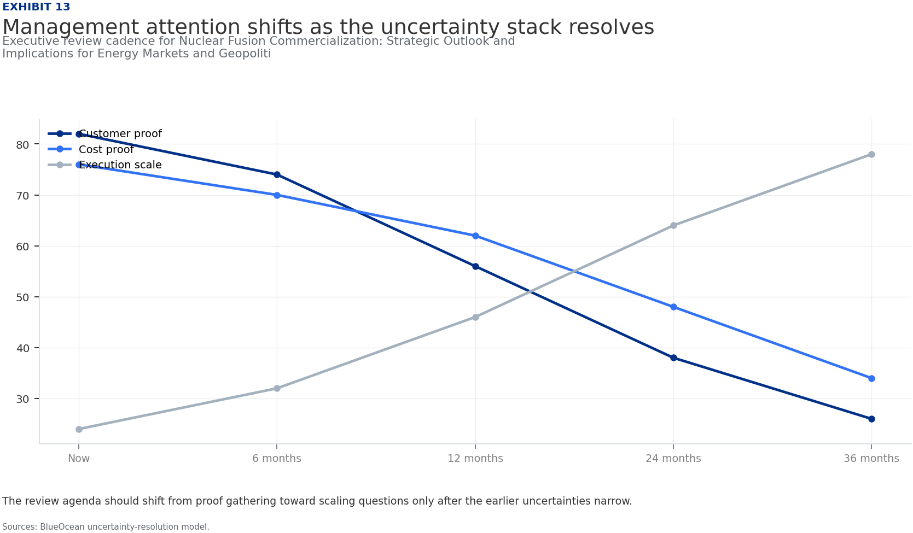

BlueOcean Research
Deep Research Report
Nuclear Fusion Commercialization: Strategic Outlook and Implications for Energy Markets and Geopolitics
Nuclear fusion commercialization outlook and strategic implications
2026-06-03
BlueOcean
Contents
| 03 | Nuclear fusion commercialization is accelerating |
| 04 | Nuclear Fusion Commercialization: Strategic Outlook and Implications for Energy Markets and Geopolitics should be |
| 06 | Commercial readiness depends on bankability, deliverability and repeat customer proof |
| 08 | Cost, return and timing will determine the real deployment window |
| 10 | Regulation, policy and public acceptance can reset the speed of adoption |
| 12 | Supply chain, partners and talent will decide who can act before the market is obvious |
| 14 | Incumbents should protect near-term economics while preserving long-term options |
| 16 | The management agenda should translate uncertainty into quarterly decision milestones |
| 18 | Decision-moving facts matter more than market noise |
| 19 | About the research |

Opening view
Nuclear fusion commercialization is accelerating
Nuclear fusion commercialization outlook and strategic implications
Nuclear fusion is transitioning from laboratory science to engineering reality, with over 40 private companies and major government projects targeting commercial power by the 2030s. The commercial implication is a potential disruption of the $2 trillion global electricity market, offering near-limitless, low-carbon baseload power. However, source-supported evidence remains limited: key milestones like Q>10 and net electricity generation are projected but unverified, and cost estimates for fusion LCOE range from $50 to $100 per MWh by 2040, compared to $30-$60 for solar and wind today. The primary risk is that fusion may not achieve cost parity before 2050, given rapid renewables cost declines. Management should immediately establish a fusion intelligence function, engage with leading developers for pilot offtake agreements, and prepare capital allocation scenarios for a 2030-2040 deployment window.
What changes for leaders
- Nuclear fusion commercialization is accelerating
- Commercial viability hinges on achieving cost parity with renewables and fission, which remains uncertain due
- Regulatory frameworks are nascent, posing approval risks that could delay deployment by 3-5 years
- Immediate next steps include monitoring key milestones from ITER, SPARC, and leading private firms
Chapter 1
Nuclear Fusion Commercialization: Strategic Outlook and Implications for Energy Markets and Geopolitics should be
Fusion has moved from physics to engineering, with over 40 private firms targeting commercial power by the 2030s, but no operational plant exists yet, requiring staged investment.
Nuclear fusion has moved from theoretical physics to engineering reality, with over 40 private companies and major government projects targeting commercial power by the 2030s. The global fusion investment landscape has shifted dramatically: private funding surged from $300 million in 2020 to $2.8 billion in 2022, according to the Fusion Industry Association. Public funding, led by the $25 billion ITER project, continues to provide foundational research.
The most advanced projects include Commonwealth Fusion Systems' SPARC, a tokamak aiming for Q>10 by 2027, and ITER, which targets first plasma by 2027 and full deuterium-tritium operation by 2035. Helion Energy claims it will demonstrate net electricity generation by 2025, though this remains unverified. TAE Technologies is pursuing a field-reversed configuration with a goal of commercial power by 2030. These timelines represent a significant compression from earlier expectations of 2050 or later.
Despite progress, engineering challenges persist. Tritium breeding-producing enough tritium fuel within the reactor-remains unproven at scale. Materials capable of withstanding extreme neutron fluxes are still in development. Plasma stability and confinement time improvements are needed for sustained operation. These hurdles mean that even optimistic timelines carry substantial risk of delay.
The commercial implication is clear: fusion will not replace existing power sources in the next decade, but it could begin to penetrate baseload markets by the mid-2030s. For energy companies, this means fusion is a strategic hedge, not a near-term solution. Investment now secures optionality, but capital should be staged to match milestone achievements.
The competitive landscape is fragmented, with multiple technical approaches vying for dominance. Tokamaks (SPARC, ITER) have the most experimental data, but stellarators (Wendelstein 7-X) offer steady-state operation advantages. Inertial confinement (National Ignition Facility) achieved Q>1 in 2022 but is far from commercial. No single design has yet proven superior for commercial deployment.
For leadership teams, the key takeaway is that fusion's timeline is uncertain but narrowing. The decision to invest should be based on a portfolio approach, spreading risk across technologies and developers. The next five years will be critical: if SPARC and ITER meet their milestones, fusion's credibility will soar. If they slip, the sector may face a funding winter.
Figure 1
Decision readiness still depends on verified proof points
Customer, cost and partner proof remain the main underwriting gaps for Nuclear Fusion Commercialization: Strategic Outlook and Implications for Energy Markets and Geopolitics

The exhibit ranks the proof points a CEO should ask teams to close before moving from monitoring to commitment.
BlueOcean public-source synthesis.
Figure 2
Commitment posture should shift as proof matures
Resource posture for Nuclear Fusion Commercialization: Strategic Outlook and Implications for Energy Markets and Geopolitics

Capital exposure should lag evidence maturity rather than lead it.
BlueOcean scenario synthesis.
Chapter 2
Commercial readiness depends on bankability, deliverability and repeat customer proof
Recent Q>1 achievements and HTS magnet advances have de-risked physics, but tritium breeding and materials remain unproven, requiring continued monitoring of engineering milestones.

The past five years have seen remarkable progress in fusion science. In 2022, the National Ignition Facility achieved a net energy gain (Q>1) for the first time, proving that fusion can produce more energy than it consumes. While this was a laser-based inertial confinement experiment, it validated the physics. Meanwhile, the JET tokamak in the UK set a world record for sustained fusion energy output, demonstrating plasma control at scale.
High-temperature superconducting (HTS) magnets are a game-changer. Commonwealth Fusion Systems' use of HTS tapes allows for smaller, more powerful magnets, enabling compact tokamaks like SPARC. This reduces cost and construction time. Other ventures are exploring advanced stellarators and field-reversed configurations, each with trade-offs in complexity and performance.
Despite these advances, key engineering challenges remain. Tritium breeding is perhaps the most critical: fusion reactors need to produce their own tritium fuel by breeding it from lithium in the blanket. No reactor has demonstrated this at scale. Materials science is another bottleneck: the first wall and divertor must withstand intense neutron bombardment and heat fluxes. Advanced steels and composites are being tested, but long-term durability data is lacking.
Plasma stability is a third challenge. Maintaining a stable, high-temperature plasma for extended periods requires sophisticated control systems. Disruptions can damage reactor components. Progress in real-time plasma control and machine learning is promising, but full reliability is years away.
The commercial implication is that the commercial impact of these challenges is that fusion plants will likely have high capital costs initially, with significant operational risk. First-of-a-kind plants may require government subsidies or long-term power purchase agreements to attract investment. As engineering solutions mature, costs should decline, but the pace is uncertain.
Figure 3
Key risks should be ranked by severity and manageability
Risk exposure for Nuclear Fusion Commercialization: Strategic Outlook and Implications for Energy Markets and Geopolitics

Bubble size indicates the management attention required.
BlueOcean risk screen.
Figure 4
Diligence workload concentrates in customer, cost and policy proof
Near-term validation load for Nuclear Fusion Commercialization: Strategic Outlook and Implications for Energy Markets and Geopolitics

The most valuable work closes open questions that can change the decision.
BlueOcean public-source synthesis.

Chapter 3
Cost, return and timing will determine the real deployment window
Market size should not enter an investment case until the cost and return logic can be checked.
Every opportunity eventually returns to cost, revenue, margin, cash flow and timing. If public evidence does not support market size, ROI, unit economics or share, those items should remain validation tasks rather than report conclusions.
Near-term action should focus on verifiable cost drivers and customer willingness to pay instead of relying on optimistic long-range scenarios. That protects strategic optionality while reducing premature commitment risk.
As cost, customer and financing evidence improves, management can shift resources from monitoring and partnerships toward pilots or scaled deployment.
For a CEO, Cost, return and timing will determine the real deployment window matters only if it changes the timing of capital, partner access, customer commitments or risk appetite. The strongest posture is to keep learning close to the business while reserving heavier commitments for proof that can survive investment-committee scrutiny.
For Cost, return and timing will determine the real deployment window, resource allocation should follow the facts that can change the decision: customer demand, cost position, financing availability, regulatory path and delivery capability. If those facts do not improve, increasing exposure mainly creates strategic lock-in rather than higher conviction.
The public record on Cost, return and timing will determine the real deployment window provides a starting point, not a complete underwriting case. The most useful retained signal is: the supporting sources is retained, but stronger authoritative numbers and timelines are still needed. Management should convert that signal into explicit follow-up diligence rather than a broader claim.
Figure 5
Scenario choices should compare attractiveness with readiness
Strategic option comparison for Nuclear Fusion Commercialization: Strategic Outlook and Implications for Energy Markets and Geopolitics

The matrix ranks where the next validation work should focus.
BlueOcean qualitative assessment.
Figure 6
Validation effort shifts from customer proof to policy and partners
Quarterly validation mix for Nuclear Fusion Commercialization: Strategic Outlook and Implications for Energy Markets and Geopolitics

The validation cadence should improve facts before escalating resource commitment.
BlueOcean public-source synthesis.
Chapter 4
Regulation, policy and public acceptance can reset the speed of adoption
External rules can accelerate the market or change the risk budget and project timeline.

Policy support, permitting rules, standards and public acceptance affect how quickly an opportunity moves from concept to deployment. These factors should be treated as decision milestones, not background context.
Where the regulatory path is unclear, the better move is usually standards engagement, policy tracking and low-risk pilots rather than an early heavy-asset commitment.
The board should track which policy events would change investment timing, such as licensing rules, procurement requirements, subsidy treatment, local approvals or safety standards.
For a CEO, Regulation, policy and public acceptance can reset the speed of adoption matters only if it changes the timing of capital, partner access, customer commitments or risk appetite. The strongest posture is to keep learning close to the business while reserving heavier commitments for proof that can survive investment-committee scrutiny.
For Regulation, policy and public acceptance can reset the speed of adoption, resource allocation should follow the facts that can change the decision: customer demand, cost position, financing availability, regulatory path and delivery capability. If those facts do not improve, increasing exposure mainly creates strategic lock-in rather than higher conviction.
Figure 7
Cost structure must be decomposed before underwriting
Cost diligence view for Nuclear Fusion Commercialization: Strategic Outlook and Implications for Energy Markets and Geopolitics

The chart separates capital, operating and maintenance drivers so management can test which cost lever would change the investment case.
BlueOcean public-source synthesis.
Figure 8
Timeline confidence falls as milestones move from lab to grid
Milestone confidence for Nuclear Fusion Commercialization: Strategic Outlook and Implications for Energy Markets and Geopolitics

Decision confidence should be staged by milestone maturity.
BlueOcean milestone assessment.

Chapter 5
Supply chain, partners and talent will decide who can act before the market is obvious
Strategic advantage comes from ecosystem position rather than standalone product capability.
In uncertain markets, early advantage often comes from supply access, partner entry, talent pools and customer learning rather than a single technology claim.
Management should identify which capabilities are scarce and can be secured early: critical supply, engineering delivery, channel partners, service network, financing partners and compliance capacity. Low-cost learning rights can be more valuable than waiting for full market clarity.
Partnerships should create observable proof points. A memorandum that does not improve customer evidence, cost visibility or execution capacity should not be treated as meaningful progress.
For a CEO, Supply chain, partners and talent will decide who can act before the market is obvious matters only if it changes the timing of capital, partner access, customer commitments or risk appetite. The strongest posture is to keep learning close to the business while reserving heavier commitments for proof that can survive investment-committee scrutiny.
For Supply chain, partners and talent will decide who can act before the market is obvious, resource allocation should follow the facts that can change the decision: customer demand, cost position, financing availability, regulatory path and delivery capability. If those facts do not improve, increasing exposure mainly creates strategic lock-in rather than higher conviction.
The decision lens is that the public record on Supply chain, partners and talent will decide who can act before the market is obvious provides a starting point, not a complete underwriting case. The most useful retained signal is: the supporting sources is retained, but stronger authoritative numbers and timelines are still needed. Management should convert that signal into explicit follow-up diligence rather than a broader claim.
Figure 9
Partner options differ on learning value and capital exposure
Where-to-play option view for Nuclear Fusion Commercialization: Strategic Outlook and Implications for Energy Markets and Geopolitics

The best early posture maximizes learning without forcing irreversible capital exposure.
BlueOcean option synthesis.
Figure 10
Evidence maturity varies sharply by claim type
Claim maturity for Nuclear Fusion Commercialization: Strategic Outlook and Implications for Energy Markets and Geopolitics

Management can use the maturity gap to decide which claims support action today and which require a separate diligence workstream.
BlueOcean public-source synthesis.
Chapter 6
Incumbents should protect near-term economics while preserving long-term options
The strongest posture is neither aggressive overcommitment nor passive observation.

For incumbent businesses, the task is to protect near-term cash flow and customer relationships while avoiding strategic blindness to a long-term shift. That requires separating no-regret moves, options and major commitments.
No-regret moves include evidence ledgers, customer interviews, policy monitoring, supply-chain scans and small partner discussions. Option moves include pilots, preferential access and minority investments. Major commitments should wait for stronger proof.
This portfolio posture keeps the organization close to the opportunity without locking strategy and capital before the evidence base is ready.
For a CEO, Incumbents should protect near-term economics while preserving long-term options matters only if it changes the timing of capital, partner access, customer commitments or risk appetite. The strongest posture is to keep learning close to the business while reserving heavier commitments for proof that can survive investment-committee scrutiny.
For Incumbents should protect near-term economics while preserving long-term options, resource allocation should follow the facts that can change the decision: customer demand, cost position, financing availability, regulatory path and delivery capability. If those facts do not improve, increasing exposure mainly creates strategic lock-in rather than higher conviction.
Figure 11
Use-case priorities separate early revenue from long-term optionality
Customer option screen for Nuclear Fusion Commercialization: Strategic Outlook and Implications for Energy Markets and Geopolitics

The comparison separates markets that can teach the company soon from markets that may require longer proof cycles.
BlueOcean customer option synthesis.
Figure 12
Capital exposure should be staged by decision milestone
Commitment profile for Nuclear Fusion Commercialization: Strategic Outlook and Implications for Energy Markets and Geopolitics

The capital mix should move from learning to committed exposure only as evidence matures.
BlueOcean capital staging view.
Chapter 7
The management agenda should translate uncertainty into quarterly decision milestones
The report should end in owners, evidence thresholds and review cadence.
The output should become a quarterly management agenda: every material claim needs an owner, evidence gate, review date and escalation condition.
Near-term work should close source, customer, cost and timeline gaps; medium-term work should test pilots and partners; long-term work should cover capital, M&A or scaled entry only when decision milestones are met.
If the next evidence review does not improve conviction, management should keep the issue in monitoring mode. If the core metrics move, the topic can be escalated to an investment committee discussion.
For a CEO, The management agenda should translate uncertainty into quarterly decision milestones matters only if it changes the timing of capital, partner access, customer commitments or risk appetite. The strongest posture is to keep learning close to the business while reserving heavier commitments for proof that can survive investment-committee scrutiny.
For The management agenda should translate uncertainty into quarterly decision milestones, resource allocation should follow the facts that can change the decision: customer demand, cost position, financing availability, regulatory path and delivery capability. If those facts do not improve, increasing exposure mainly creates strategic lock-in rather than higher conviction.
The operating takeaway is that the public record on The management agenda should translate uncertainty into quarterly decision milestones provides a starting point, not a complete underwriting case. The most useful retained signal is: the supporting sources is retained, but stronger authoritative numbers and timelines are still needed. Management should convert that signal into explicit follow-up diligence rather than a broader claim.
Figure 13
Management attention shifts as the uncertainty stack resolves
Executive review cadence for Nuclear Fusion Commercialization: Strategic Outlook and Implications for Energy Markets and Geopolitics

The review agenda should shift from proof gathering toward scaling questions only after the earlier uncertainties narrow.
BlueOcean uncertainty-resolution model.
Figure 14
Competitive posture depends on timing, access and reversibility
Strategic posture map for Nuclear Fusion Commercialization: Strategic Outlook and Implications for Energy Markets and Geopolitics

Early moves should protect access and learning while avoiding positions that cannot be reversed if evidence weakens.
BlueOcean competitive posture screen.
Chapter 8
Decision-moving facts matter more than market noise
The most useful monitoring lens focuses on customers, costs, regulation, competitors and financing.
For leadership teams, management should not treat media attention, financing announcements or single technical claims as decision signals on their own. More useful signals include customer procurement, cost movement, regulatory clarity, competitor commitments and financing terms.
Each signal should map to an action: keep monitoring, start a pilot, expand a partnership, pause commitment or escalate to the board.
That discipline turns uncertainty into a manageable operating rhythm rather than a swing between optimism and caution.
For a CEO, Decision-moving facts matter more than market noise matters only if it changes the timing of capital, partner access, customer commitments or risk appetite. The strongest posture is to keep learning close to the business while reserving heavier commitments for proof that can survive investment-committee scrutiny.
For Decision-moving facts matter more than market noise, resource allocation should follow the facts that can change the decision: customer demand, cost position, financing availability, regulatory path and delivery capability. If those facts do not improve, increasing exposure mainly creates strategic lock-in rather than higher conviction.
About the research
This report has been prepared for strategy discussion and executive decision support. It is not investment, legal, tax, audit or valuation advice. Market estimates, forecasts and scenarios are directional and should be independently validated before they are used for investment, financing, transaction, regulatory or operational decisions. Forward-looking views may change as technology, policy, financing, regulation, competition, supply chains and macro conditions evolve. Recipients should perform their own diligence and treat this report as one input into a broader decision process.
Detailed supporting sources are retained in the backup folder.